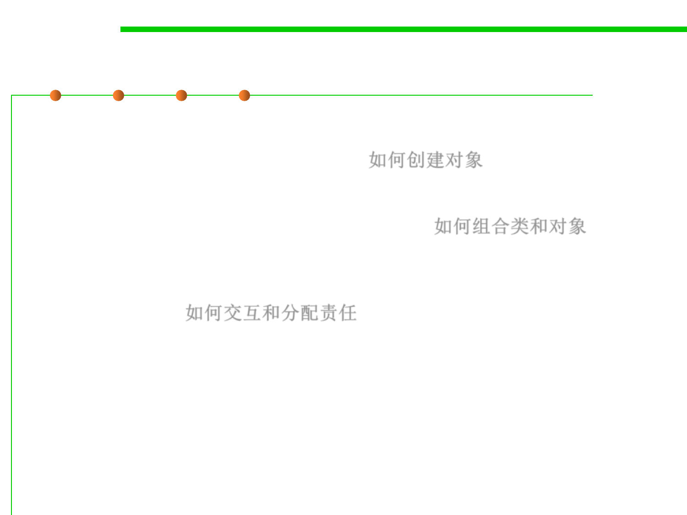

Design patterns taxonomy
5.3 Design Patterns for Reuse
▪ Creational patterns
– Concern the process of object creation 如何创建对象
▪ Structural patterns
– Deal with the composition of classes or objects 如何组合类和对象
▪ Behavioral patterns
– Characterize the ways in which classes or objects interact and distribute
responsibility. 如何交互和分配责任